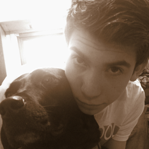

- allow us to introduce -
BRIDESMAIDS
GROOMSMEN
Blair Steen
Relation to the bride and groom: Bride’s younger sister, childhood & college roommate, and unofficial therapist.
Some info on this awsome person: Blair is currently a student at MSU, it super creative, enjoys doing mission work, works as a bartender, and loves to cook, run, read & watch Downton Abbey.
Kevin Smith
Relation to the bride and groom: Groom’s older brother, and childhood best friend & punching bag.
Some info on this awsome person: Kevin graduated from MSU, lives in California with his wife & their daughter, and loves to read & watch MSU sports.
Regan Steen
Relation to the bride and groom: Bride’s youngest sister, high school Spanish-101 classmate, and little-spoon.
Some info on this awsome person: Regan goes to college in Vermont, is studying Bio Chemistry & Pre-med, is a Cadet in the Army, is an overachiever, and loves to read, run & scuba dive.
Lance Kinstner
Relation to the bride and groom: Bride and Groom’s good college friend, and a member of the Spartan Discords while the Groom was in it.
Some info on this awsome person: Lance graduated from MSU, is a teacher, lives in Grand Rapids with his wife & their daughter (Kate the Great [Dane]), and loves to sing and travel.
Melissa Thering
Relation to the bride and groom: Bride’s college roommate, friend, and Domestic Diva trainer.
Some info on this awsome person: Melissa graduated from MSU, is a student teacher in Detroit, is in engaged to be married this up coming September, and loves to cook, shop & watch Say Yes to the Dress.
Liam Steen

Relation to the bride and groom: Groom’s friend and future brother in law. Bride’s little brother, tormenter, and comedian.
Some info on this awsome person: Liam is a Jr. in high school, Captain for his cross country, swimming, & track teams, is supper funny, loves fish, hike, drink tea, cook, scuba dive & spend time with his puppy.